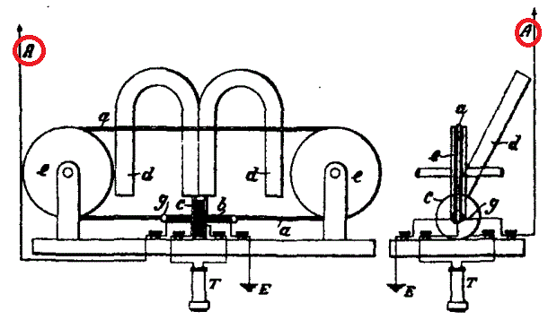
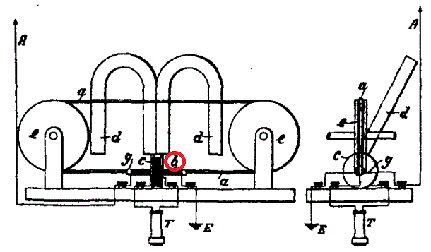

История беспроволочного телеграфа
Web-Quest
Вариант 2
Выпуклость земного шара не мешает движению электромагнитных волн
Электромагнитные волны оказывают давление на поглощающее или отражающее тело
Электромагнитные волны создают вихревое поле
2. Когда состоялась первая в истории трансатлантическая радиопередача?
1939 г.
1901 г.
1913 г.
3. Как можно усилить намагничивание железа магнитного детектора?
Ослабить сопротивление
Усилить магнитное поле
Вызвать заметное сотрясение молекул железа
4. Где происходило перемагничивание железной ленты?
В когерере
Под средними сдвоенными одноименными полюсами
Под сдвоенными стенками джиггера
5. Что изображено под «A» на этом рисунке?

Воздушный привод
Телефон
Стеклянная трубка
6. Что изображено под «b» на этом рисунке?

Земля
Первичная обмотка
Постоянный магнит
7. Сколько слов было передано в первый день после открытия первой радиотелеграфной станции?
Около ста
Более ста тысяч
Четырнадцать тысяч